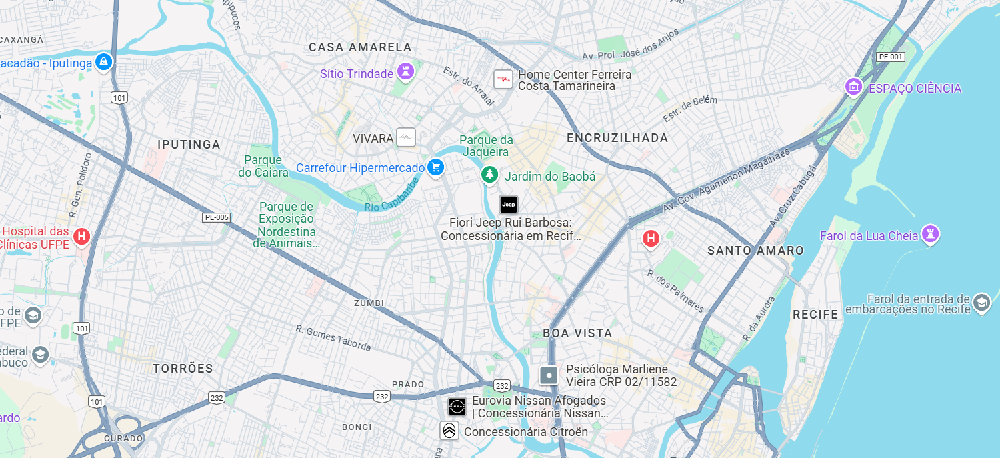

<ion-header [translucent]="true" >
  <ion-toolbar class="bodynav" >
    <ion-title>
     ApiClima
    </ion-title>
  </ion-toolbar>
</ion-header>

<ion-content [fullscreen]="true">
  <ion-header collapse="condense">
    <ion-toolbar>
      <ion-title size="large">ApiClima</ion-title>
    </ion-toolbar>
  </ion-header>

  <ion-card>
    

  </ion-card>

  <ion-card class="cardBusca">
    <ion-card-header>
      <ion-input [(ngModel)]="BuscarCity" placeholder="Digite o nome da cidade" maxlength="50"
      [counter]="true" class="Input">
    </ion-input>
      <ion-button class="buttonbuscar" (click)="PrevisaoCidade()" fill="solid">
        <ion-icon slot="icon-only" name="search"></ion-icon>
      </ion-button>
    
    </ion-card-header>
  </ion-card>
<ion-card *ngIf="cityClima.name">
  <ion-card-header class="cardClima">
    <ion-card-title class="titleCity" >
      {{cityClima.name}}
    </ion-card-title>
    <ion-card-content class="content" >
        <ion-item class="TempText">
          <ion-icon name="cloudy-night-outline" class="IconTemp"></ion-icon> {{ cityClima.main.temp | number: '1.0-0'}}°C
        </ion-item>
        <ion-item>
          {{cityClima.weather.description | titlecase }}
        </ion-item>
        <ion-item>
          <ion-icon name="thermometer-outline" class="iconUmidade"></ion-icon>umidade:{{cityClima.main.humidity}}
        </ion-item>
        <ion-button slot="favorito" (click)="adicionarFavoritos()" fill="clear" *ngIf="cityClima.name">
          <ion-icon name="bookmark-outline" class="iconFavo"></ion-icon>
        </ion-button>
    </ion-card-content>
  </ion-card-header>
</ion-card>

</ion-content>
